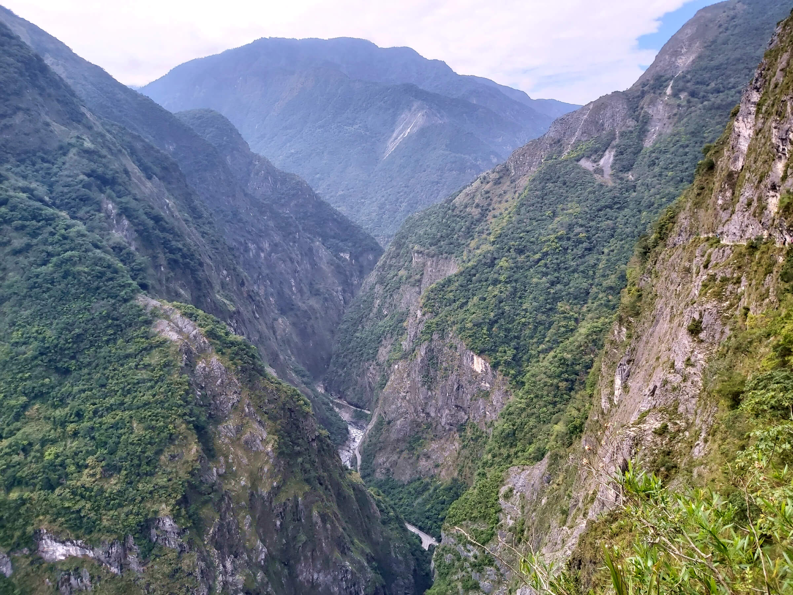
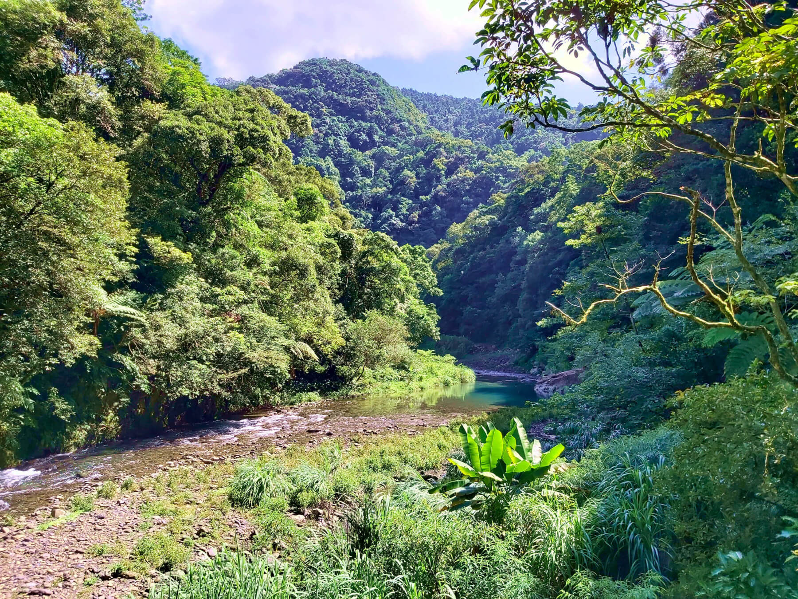
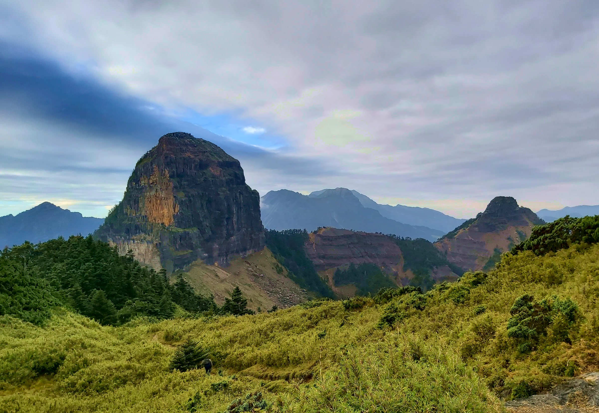
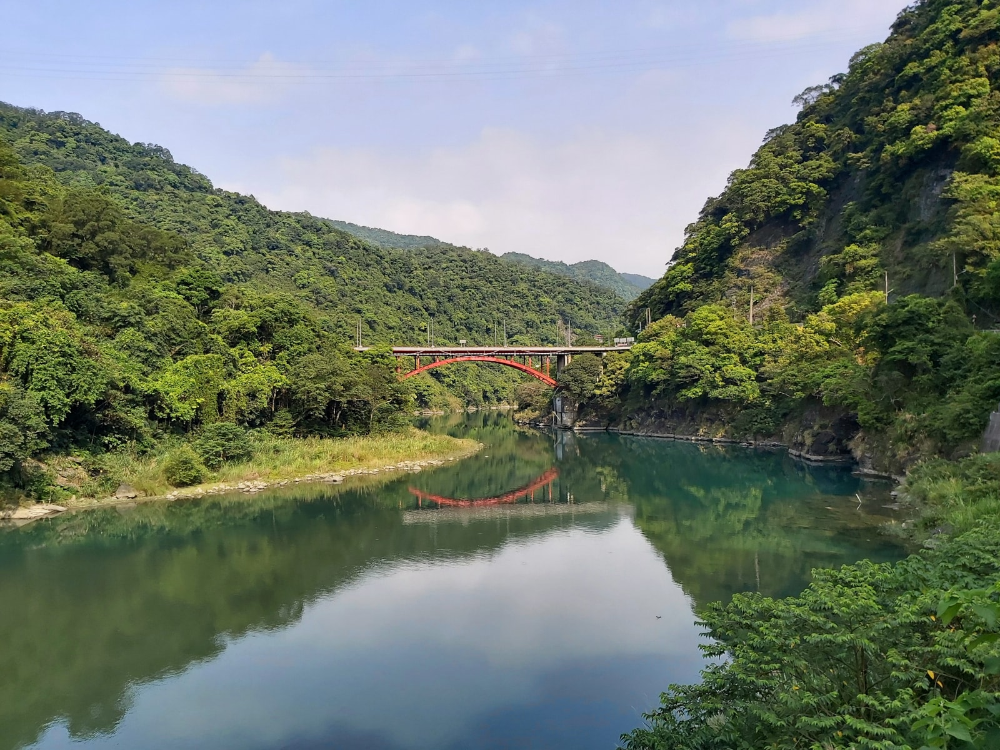

Taiwan Hikes
Find Good & Free Hikes in Taiwan
Start here
Home
About
Guided Trips
Blog
Flowers on the Trails
Resources
Blog
Search Posts
Search by Locations:
Select
Northern Taiwan
Eastern Taiwan
Central Taiwan
Southern Taiwan
Search by Levels:
Select
Easy Hikes
Moderate Hikes
Challenging Hikes
100 Peaks
Search by Features:
Select
Indigenous Culture and History
Historic/Old Trails
Sunrise and Sea of Clouds
Mountains and Oceans
Between Ridgelines
Unique Flowers
Massive Ascending/Descending
Hikes Near the Old Street
Never Again Hikes
Hualien Special Series
Banknote Special Series
Tonghou Series
Show All Posts
100 Peaks and 100 Km Feat: Stunning Sunrise from Qicai Lake and Sea of Clouds around Mt. Liushun
Syakaro Historic Trail: A Hike with History, Suspension Bridges and Fall Foliage
Mt. Teapot, Mt Banping and Mt. Canguanliao with Panoramic Views, plus Mt. Nanzilin
100 Peaks: Qilai Nanhua Trail Complete Hiking Guide
Shakadang Trail and Xiaozhuilu Trail: Short and Easy Hike in Taroko, Hualien
Zhuilu Old Trail: An Epic Cliff Hike in Taroko Gorge

Tonghou Traversing Trail: Discover the True Beauty of Rivers in Taipei and You’ll Want to Come Back Again

Puli Six Beauties Part 2: Mt. Yousheng and Mt. South Dongyan
Puli Six Beauties Part 1: Big Mt. Soucheng, Mt. Guandao, Old Mt. Wujeyue, and Mt. Hengping
100 Peaks Hike - Mt. Dabajian: A Bucket List Hike to the Magnificent Rocks on the Ridgeline in Taiwan

Tonghou River Source and Mt. Hongludi Hike: One of the Best Places to Spend Hot Summer in Taiwan
Dali Datong Villages: A Hike Worth Doing Every Year to See the Paradise in Eastern Taiwan
100 Peaks Hike - Mt Baigu: A Trail You Want to Do but Only Want to Do It Once
Mt. Yuan to Daxi: A Ridgeline Hike between Sanxia and Daxi Old Streets
Mt. Wulai to Mt. Datong: A Trail to See Exotic Wild Orchids and Beautiful Woods in an Indigenous Village near Taipei

Lake Songluo: A Hike to See Beams of Sunlight Chasing Mist over the Dreamy Water in Taiwan
Smangus to Qilan: A Trail to See Old Trees, Sea of Clouds, and Holy Ridgeline of 100 Peaks
Bitou Cape Trails: Where Sunrise, Mountains, and Lighthouse Meet
ROMA Trail: A Great Ridge Hike Sounded by 3,000-m Summits, Sea of Clouds, and Old Trees in Taiwan
Visit the highest Peak on One of the Most Famous Tourist Attractions in Taiwan: Hiking Mt. Data in Alishan Range
Tefuye Old Trail and Mt. Zhizhong: Get A Glimpse of the Highest Peak in Northeast Asia
Mt. Keelung: A Short Trail with Mountain-Ocean View and You Can Choose the Easy or the Hard Way